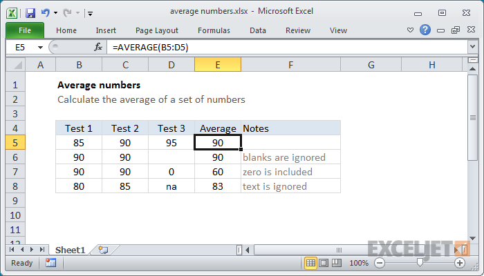
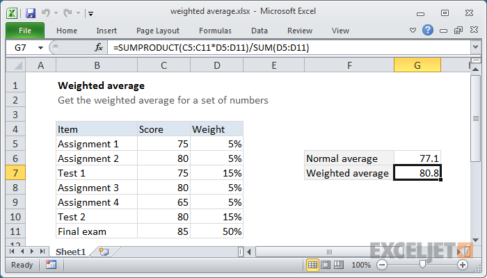
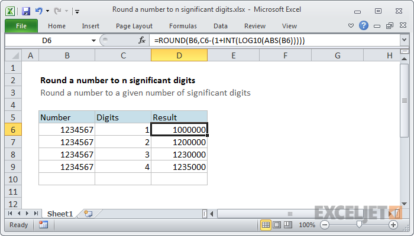
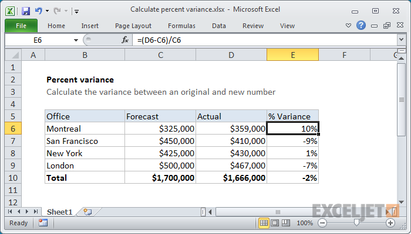
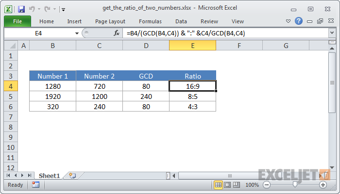

Helpful Formulas To Use:
-
Average Numbers:
AVERAGE is an automatic function in Excel. In most cases, you'll supply a range of cells to average, and the function will return the result. However, you can also supply individual arguments to the function, in cases where cells are non-adjacent.
The generic formula looks like this: =AVERAGE(range)
 -
Weighted Average:
To calculated a weighted average, you can use the SUMPRODUCT function together with the SUM function. The SUMPRODUCT function multiples arrays together and sums the result.
The generic formula looks like this: =SUMPRODUCT(numbers,weights) / SUM(weights)
 -
Round A Number To "n" Significant Digits
If you need to round a number to a given (variable) number of specified digits or figures, you can do so with an elegant formula that uses the ROUND and LOG10 functions. To sum up this formula:
1. ABS coverts the value to an absolute (positive) value
2. LOG10 gets the exponent
3. INT trims off the decimal part of the exponent
4. The formula uses the exponent and the supplied significant digits to figure out the right number of digits to give ROUND
5. ROUND rounds the number using the digits suppliedThe generic formula looks this: =ROUND(number,digits - (1 + INT(LOG10(number)))))
 -
Calculate Percent Variance:
If you need to calculate percent variance you can use a simple formula that divides the difference between new number and the original number by the original number. This formula can be used to calculate things like variance between this year and last year, variance between a budgeted amount with an actual amount, and so on.
The generic formula looks like this: =(new - original) / original
NOTE:
If have a negative value for the original number, the above formula won't work and can be adjusted by adding the ABS function: =(new - original) / ABS(original)
-
Calculate A Ratio From Two Numbers:
To generate the ratio of two numbers to each other (e.g. 4:3, 16:9, etc.), you can do using division, the GCD function, and concatenation. In the generic form of the formula (above) num1 represents the first number (the antecedent) and num2 represents the second number (the consequent).
On the left, the GCD function is used to calculated the greatest common divisor (GCD) of the two numbers. Then the first number is divided by the GCD. On the right, the same operations are performed with the second number. Next, the result of the right and left operations are joined together using concatenation, with the colon (":") as a separator.
The generic formula looks this: =num1 / GCD(num1,num2 &":"&num2 / GCD(num1,num2)
